Learning objectives
- Recall the five key dplyr functions for manipulating your data
select()for selecting a subset of variables, i.e. selecting columns in your tablefilter()for selecting observations based on their values, i.e. selecting rows in your tablearrange()for sorting the observations in your tablemutate()for creating a new variable or modifying an existing variablesummarise()for collapsing values in one of more columns to a single summary value- Chain operations together into a workflow using pipes
- Review faceting in ggplot2 to split your data into separate categories and create a series of sub-plots arranged in a grid
A video that goes through this session’s material can be found here.
dplyr is one of the packages that gets loaded as part of the tidyverse.
## ── Attaching packages ─────────────────────────────────────── tidyverse 1.3.1 ──## ✔ ggplot2 3.3.6 ✔ purrr 0.3.4
## ✔ tibble 3.1.7 ✔ dplyr 1.0.9
## ✔ tidyr 1.2.0 ✔ stringr 1.4.0
## ✔ readr 2.1.2 ✔ forcats 0.5.1## ── Conflicts ────────────────────────────────────────── tidyverse_conflicts() ──
## ✖ dplyr::filter() masks stats::filter()
## ✖ dplyr::lag() masks stats::lag()dplyr is the Swiss army knife in the tidyverse, providing many useful functions for manipulating tabular data in data frames or tibbles. We’re going to look at the key functions for filtering our data, modifying the contents and computing summary statistics.
We’ll also use the pipe operator,
%>%, for chaining operations together
into mini workflows in a way that makes for more readable and
maintainable code.
Finally, we’ll return to plotting and look at the powerful feature of ggplot2, faceting, that allows you to divide your plots into subplots by splitting the observations based on one or more categorical variables.
We’ll again use the METABRIC data set to illustrate how these operations work.
metabric <- read_csv("https://zenodo.org/record/6450144/files/metabric_clinical_and_expression_data.csv")
metabric## # A tibble: 1,904 × 32
## Patient_ID Cohort Age_at_diagnosis Survival_time Survival_status Vital_status
## <chr> <dbl> <dbl> <dbl> <chr> <chr>
## 1 MB-0000 1 75.6 140. LIVING Living
## 2 MB-0002 1 43.2 84.6 LIVING Living
## 3 MB-0005 1 48.9 164. DECEASED Died of Dis…
## 4 MB-0006 1 47.7 165. LIVING Living
## 5 MB-0008 1 77.0 41.4 DECEASED Died of Dis…
## 6 MB-0010 1 78.8 7.8 DECEASED Died of Dis…
## 7 MB-0014 1 56.4 164. LIVING Living
## 8 MB-0022 1 89.1 99.5 DECEASED Died of Oth…
## 9 MB-0028 1 86.4 36.6 DECEASED Died of Oth…
## 10 MB-0035 1 84.2 36.3 DECEASED Died of Dis…
## # … with 1,894 more rows, and 26 more variables: Chemotherapy <chr>,
## # Radiotherapy <chr>, Tumour_size <dbl>, Tumour_stage <dbl>,
## # Neoplasm_histologic_grade <dbl>, Lymph_nodes_examined_positive <dbl>,
## # Lymph_node_status <dbl>, Cancer_type <chr>, ER_status <chr>,
## # PR_status <chr>, HER2_status <chr>, HER2_status_measured_by_SNP6 <chr>,
## # PAM50 <chr>, `3-gene_classifier` <chr>, Nottingham_prognostic_index <dbl>,
## # Cellularity <chr>, Integrative_cluster <chr>, Mutation_count <dbl>, …We will be looking at the 5 key dplyr functions this session:
filter() for filtering rowsselect() for selecting columnsarrange() for sorting rowsmutate() for modifying columns or
creating new onessummarise() for computing summary
valuesIn looking at each of these in turn, we’ll be applying these to the
entire data set. It is possible to combine these with the
group_by() function to instead operate on separate groups
within our data set but this is something we’ll cover in detail next
session.
The dplyr operations are commonly referred to as “verbs” in a data manipulation grammar. These verbs have a common syntax and work together in a consistent and uniform manner. They all have the following shared behaviours:
The first argument in each function is a data frame (or tibble)
Any additional arguments describe what operation to perform on the data frame
Variable names, i.e. column names, are referred to without using quotes
The result of an operation is a new data frame
filter()
The filter verb allows you to choose
rows from a data frame that match some specified criteria. The criteria
are based on values of variables and can make use of comparison
operators such as ==, >, <
and !=.
For example, to filter the METABRIC data set so that it only contains
observations for those patients who died of breast cancer we can use
filter() as follows.
deceased <- filter(metabric, Vital_status == "Died of Disease")
deceased## # A tibble: 622 × 32
## Patient_ID Cohort Age_at_diagnosis Survival_time Survival_status Vital_status
## <chr> <dbl> <dbl> <dbl> <chr> <chr>
## 1 MB-0005 1 48.9 164. DECEASED Died of Dis…
## 2 MB-0008 1 77.0 41.4 DECEASED Died of Dis…
## 3 MB-0010 1 78.8 7.8 DECEASED Died of Dis…
## 4 MB-0035 1 84.2 36.3 DECEASED Died of Dis…
## 5 MB-0036 1 85.5 132. DECEASED Died of Dis…
## 6 MB-0079 1 50.4 28.5 DECEASED Died of Dis…
## 7 MB-0083 1 64.8 86.1 DECEASED Died of Dis…
## 8 MB-0100 1 68.7 8.07 DECEASED Died of Dis…
## 9 MB-0102 1 51.4 141. DECEASED Died of Dis…
## 10 MB-0108 1 43.2 42.7 DECEASED Died of Dis…
## # … with 612 more rows, and 26 more variables: Chemotherapy <chr>,
## # Radiotherapy <chr>, Tumour_size <dbl>, Tumour_stage <dbl>,
## # Neoplasm_histologic_grade <dbl>, Lymph_nodes_examined_positive <dbl>,
## # Lymph_node_status <dbl>, Cancer_type <chr>, ER_status <chr>,
## # PR_status <chr>, HER2_status <chr>, HER2_status_measured_by_SNP6 <chr>,
## # PAM50 <chr>, `3-gene_classifier` <chr>, Nottingham_prognostic_index <dbl>,
## # Cellularity <chr>, Integrative_cluster <chr>, Mutation_count <dbl>, …Remember that the == operator tests for
equality, i.e. is the value for Vital_status for each
patient (observation) equal to “Died of Disease”.
Let’s have a look at the various categories in the
Vital_status variable.
table(metabric$Vital_status)##
## Died of Disease Died of Other Causes Living
## 622 480 801We could use the != comparison operator to select all
deceased patients regardless of whether they died of the disease or
other causes, by filtering for those that don’t have the value
“Living”.
## [1] 1102Another way of doing this is to specify which classes we are
interested in and use the %in% operator to
test which observations (rows) contain those values.
deceased <- filter(metabric, Vital_status %in% c("Died of Disease", "Died of Other Causes"))
nrow(deceased)## [1] 1102Another of the tidyverse packages,
stringr, contains a set of very useful
functions for operating on text or character strings. One such function,
str_starts() could be used to find all
Vital_status values that start with “Died”.
deceased <- filter(metabric, str_starts(Vital_status, "Died"))
nrow(deceased)## [1] 1102Unsurprisingly there is an equivalent function,
str_ends(), for matching the end of text (character) values
and str_detect() is another useful function that determines
whether values match a regular expression. Regular expressions are a
language for search patterns used frequently in computer programming and
really worth getting to grips with but sadly these are beyond the scope
of this course.
Filtering based on a logical variable is the most simple type of
filtering of all. We don’t have any logical variables in our METABRIC
data set so we’ll create one from the binary
Survival_status variable to use as an example.
# create a new logical variable called 'Deceased'
metabric$Deceased <- metabric$Survival_status == "DECEASED"
#
# filtering based on a logical variable - only selects TRUE values
deceased <- filter(metabric, Deceased)
#
# only display those columns we're interested in
select(deceased, Patient_ID, Survival_status, Vital_status, Deceased)## # A tibble: 1,103 × 4
## Patient_ID Survival_status Vital_status Deceased
## <chr> <chr> <chr> <lgl>
## 1 MB-0005 DECEASED Died of Disease TRUE
## 2 MB-0008 DECEASED Died of Disease TRUE
## 3 MB-0010 DECEASED Died of Disease TRUE
## 4 MB-0022 DECEASED Died of Other Causes TRUE
## 5 MB-0028 DECEASED Died of Other Causes TRUE
## 6 MB-0035 DECEASED Died of Disease TRUE
## 7 MB-0036 DECEASED Died of Disease TRUE
## 8 MB-0046 DECEASED Died of Other Causes TRUE
## 9 MB-0079 DECEASED Died of Disease TRUE
## 10 MB-0083 DECEASED Died of Disease TRUE
## # … with 1,093 more rowsWe can use the ! operator to filter
those patients who are not deceased.
filter(metabric, !Deceased)The eagle-eyed will have spotted that filtering on our newly created
Deceased logical variable gave a slightly different number of
observations (patients) who are considered to be deceased, compared with
the filtering operations shown above based on the
Vital_status variable. We get one extra row. This is
because we have a missing value for the vital status of one of the
patients. We can filter for this using the
is.na() function.
missing_vital_status <- filter(metabric, is.na(Vital_status))
select(missing_vital_status, Patient_ID, Survival_status, Vital_status, Deceased)## # A tibble: 1 × 4
## Patient_ID Survival_status Vital_status Deceased
## <chr> <chr> <chr> <lgl>
## 1 MB-5130 DECEASED NA TRUEfilter() only retains rows where the condition if
TRUE; both FALSE and NA values
are filtered out.
We can apply more than one condition in our filtering operation, for example the patients who were still alive at the time of the METABRIC study and had survived for more than 10 years (120 months).
filter(metabric, Survival_status == "LIVING", Survival_time > 120)## # A tibble: 545 × 33
## Patient_ID Cohort Age_at_diagnosis Survival_time Survival_status Vital_status
## <chr> <dbl> <dbl> <dbl> <chr> <chr>
## 1 MB-0000 1 75.6 140. LIVING Living
## 2 MB-0006 1 47.7 165. LIVING Living
## 3 MB-0014 1 56.4 164. LIVING Living
## 4 MB-0039 1 70.9 164. LIVING Living
## 5 MB-0045 1 45.3 165. LIVING Living
## 6 MB-0053 1 70.0 161. LIVING Living
## 7 MB-0054 1 66.9 160. LIVING Living
## 8 MB-0060 1 45.4 141. LIVING Living
## 9 MB-0062 1 52.1 154. LIVING Living
## 10 MB-0066 1 61.5 157. LIVING Living
## # … with 535 more rows, and 27 more variables: Chemotherapy <chr>,
## # Radiotherapy <chr>, Tumour_size <dbl>, Tumour_stage <dbl>,
## # Neoplasm_histologic_grade <dbl>, Lymph_nodes_examined_positive <dbl>,
## # Lymph_node_status <dbl>, Cancer_type <chr>, ER_status <chr>,
## # PR_status <chr>, HER2_status <chr>, HER2_status_measured_by_SNP6 <chr>,
## # PAM50 <chr>, `3-gene_classifier` <chr>, Nottingham_prognostic_index <dbl>,
## # Cellularity <chr>, Integrative_cluster <chr>, Mutation_count <dbl>, …We can add as many conditions as we like separating each with a
comma. Adding conditions in this way is equivalent to combining the
conditions using the & (Boolean AND)
operator.
filter(metabric, Survival_status == "LIVING", Survival_time > 120)
# is equivalent to
filter(metabric, Survival_status == "LIVING" & Survival_time > 120)Naturally we can also check when either of two conditions holds true
by using the | (Boolean OR) operator. And
we can build up more complicated filtering operations using both
& and |. For example, let’s see which
patients have stage 3 or stage 4 tumours that are either estrogen
receptor (ER) positive or progesterone receptor (PR) positive.
selected_patients <- filter(metabric, Tumour_stage >= 3, ER_status == "Positive" | PR_status == "Positive")
nrow(selected_patients)## [1] 79In this case, if you used & in place of the comma
you’d need to be careful about the precedence of the &
and | operators and use parentheses to make clear what you
intended.
filter(metabric, Tumour_stage >= 3 & (ER_status == "Positive" | PR_status == "Positive"))select()
Another way of “slicing and dicing”” our tabular data set is to select just the variables or columns we’re interested in. This can be important particularly when the data set contains a very large number of variables as is the case for the METABRIC data. Notice how when we print the METABRIC data frame it is not possible to display all the columns; we only get the first few and then a long list of the additional ones that weren’t displayed.
Using the $ operator is quite convenient for selecting a
single column and extracting the values as a vector. However, for
selecting multiple columns, the select()
function from dplyr is simpler. We have already seen it a little when we
used it above to view just a few columns in the dataset.
select(metabric, Patient_ID, Survival_status, Vital_status, Deceased)## # A tibble: 1,904 × 4
## Patient_ID Survival_status Vital_status Deceased
## <chr> <chr> <chr> <lgl>
## 1 MB-0000 LIVING Living FALSE
## 2 MB-0002 LIVING Living FALSE
## 3 MB-0005 DECEASED Died of Disease TRUE
## 4 MB-0006 LIVING Living FALSE
## 5 MB-0008 DECEASED Died of Disease TRUE
## 6 MB-0010 DECEASED Died of Disease TRUE
## 7 MB-0014 LIVING Living FALSE
## 8 MB-0022 DECEASED Died of Other Causes TRUE
## 9 MB-0028 DECEASED Died of Other Causes TRUE
## 10 MB-0035 DECEASED Died of Disease TRUE
## # … with 1,894 more rowsNotice the similarities with the filter() function. The
first argument is the data frame we are operating on and the arguments
that follow on are specific to the operation in question, in this case,
the variables (columns) to select. Note that the variables do not need
to be put in quotes, and the returned value is another data frame, even
if only one column was selected.
We can alter the order of the variables (columns).
select(metabric, Patient_ID, Vital_status, Survival_status, Deceased)## # A tibble: 1,904 × 4
## Patient_ID Vital_status Survival_status Deceased
## <chr> <chr> <chr> <lgl>
## 1 MB-0000 Living LIVING FALSE
## 2 MB-0002 Living LIVING FALSE
## 3 MB-0005 Died of Disease DECEASED TRUE
## 4 MB-0006 Living LIVING FALSE
## 5 MB-0008 Died of Disease DECEASED TRUE
## 6 MB-0010 Died of Disease DECEASED TRUE
## 7 MB-0014 Living LIVING FALSE
## 8 MB-0022 Died of Other Causes DECEASED TRUE
## 9 MB-0028 Died of Other Causes DECEASED TRUE
## 10 MB-0035 Died of Disease DECEASED TRUE
## # … with 1,894 more rowsWe can also select a range of columns using
:, e.g. to select the patient identifier
and all the columns between Tumour_size and
Cancer_type we could run the following
select() command.
select(metabric, Patient_ID, Chemotherapy:Tumour_stage)## # A tibble: 1,904 × 5
## Patient_ID Chemotherapy Radiotherapy Tumour_size Tumour_stage
## <chr> <chr> <chr> <dbl> <dbl>
## 1 MB-0000 NO YES 22 2
## 2 MB-0002 NO YES 10 1
## 3 MB-0005 YES NO 15 2
## 4 MB-0006 YES YES 25 2
## 5 MB-0008 YES YES 40 2
## 6 MB-0010 NO YES 31 4
## 7 MB-0014 YES YES 10 2
## 8 MB-0022 NO YES 29 2
## 9 MB-0028 NO YES 16 2
## 10 MB-0035 NO NO 28 2
## # … with 1,894 more rowsThe help page for select points to some special
functions that can be used within select(). We can find all
the columns, for example, that contain the term “status” using
contains().
## # A tibble: 1,904 × 7
## Survival_status Vital_status Lymph_node_stat… ER_status PR_status HER2_status
## <chr> <chr> <dbl> <chr> <chr> <chr>
## 1 LIVING Living 3 Positive Negative Negative
## 2 LIVING Living 1 Positive Positive Negative
## 3 DECEASED Died of Dis… 2 Positive Positive Negative
## 4 LIVING Living 2 Positive Positive Negative
## 5 DECEASED Died of Dis… 3 Positive Positive Negative
## 6 DECEASED Died of Dis… 1 Positive Positive Negative
## 7 LIVING Living 2 Positive Positive Negative
## 8 DECEASED Died of Oth… 2 Positive Negative Negative
## 9 DECEASED Died of Oth… 2 Positive Negative Negative
## 10 DECEASED Died of Dis… 1 Positive Negative Negative
## # … with 1,894 more rows, and 1 more variable:
## # HER2_status_measured_by_SNP6 <chr>If we only wanted those ending with “status” we could use
ends_with() instead.
## # A tibble: 1,904 × 6
## Survival_status Vital_status Lymph_node_stat… ER_status PR_status HER2_status
## <chr> <chr> <dbl> <chr> <chr> <chr>
## 1 LIVING Living 3 Positive Negative Negative
## 2 LIVING Living 1 Positive Positive Negative
## 3 DECEASED Died of Dis… 2 Positive Positive Negative
## 4 LIVING Living 2 Positive Positive Negative
## 5 DECEASED Died of Dis… 3 Positive Positive Negative
## 6 DECEASED Died of Dis… 1 Positive Positive Negative
## 7 LIVING Living 2 Positive Positive Negative
## 8 DECEASED Died of Oth… 2 Positive Negative Negative
## 9 DECEASED Died of Oth… 2 Positive Negative Negative
## 10 DECEASED Died of Dis… 1 Positive Negative Negative
## # … with 1,894 more rowsWe can also select those columns we’re not interested in and that
shouldn’t be included by prefixing the columns with
-.
select(metabric, -Cohort)## # A tibble: 1,904 × 32
## Patient_ID Age_at_diagnosis Survival_time Survival_status Vital_status
## <chr> <dbl> <dbl> <chr> <chr>
## 1 MB-0000 75.6 140. LIVING Living
## 2 MB-0002 43.2 84.6 LIVING Living
## 3 MB-0005 48.9 164. DECEASED Died of Disease
## 4 MB-0006 47.7 165. LIVING Living
## 5 MB-0008 77.0 41.4 DECEASED Died of Disease
## 6 MB-0010 78.8 7.8 DECEASED Died of Disease
## 7 MB-0014 56.4 164. LIVING Living
## 8 MB-0022 89.1 99.5 DECEASED Died of Other Caus…
## 9 MB-0028 86.4 36.6 DECEASED Died of Other Caus…
## 10 MB-0035 84.2 36.3 DECEASED Died of Disease
## # … with 1,894 more rows, and 27 more variables: Chemotherapy <chr>,
## # Radiotherapy <chr>, Tumour_size <dbl>, Tumour_stage <dbl>,
## # Neoplasm_histologic_grade <dbl>, Lymph_nodes_examined_positive <dbl>,
## # Lymph_node_status <dbl>, Cancer_type <chr>, ER_status <chr>,
## # PR_status <chr>, HER2_status <chr>, HER2_status_measured_by_SNP6 <chr>,
## # PAM50 <chr>, `3-gene_classifier` <chr>, Nottingham_prognostic_index <dbl>,
## # Cellularity <chr>, Integrative_cluster <chr>, Mutation_count <dbl>, …You can use a combination of explicit naming, ranges, helper functions and negation to select the columns of interest.
selected_columns <- select(metabric, Patient_ID, starts_with("Tumour_"), `3-gene_classifier`:Integrative_cluster, -Cellularity)
selected_columns## # A tibble: 1,904 × 6
## Patient_ID Tumour_size Tumour_stage `3-gene_classifier` Nottingham_prognos…
## <chr> <dbl> <dbl> <chr> <dbl>
## 1 MB-0000 22 2 ER-/HER2- 6.04
## 2 MB-0002 10 1 ER+/HER2- High Prolif 4.02
## 3 MB-0005 15 2 NA 4.03
## 4 MB-0006 25 2 NA 4.05
## 5 MB-0008 40 2 ER+/HER2- High Prolif 6.08
## 6 MB-0010 31 4 ER+/HER2- High Prolif 4.06
## 7 MB-0014 10 2 NA 4.02
## 8 MB-0022 29 2 NA 4.06
## 9 MB-0028 16 2 ER+/HER2- High Prolif 5.03
## 10 MB-0035 28 2 ER+/HER2- High Prolif 3.06
## # … with 1,894 more rows, and 1 more variable: Integrative_cluster <chr>You can also use select() to completely reorder the
columns so they’re in the order of your choosing. The
everything() helper function is useful in this context,
particularly if what you’re really interested in is bringing one or more
columns to the left hand side and then including everything else
afterwards in whatever order they were already in.
select(metabric, Patient_ID, Survival_status, Tumour_stage, everything())## # A tibble: 1,904 × 33
## Patient_ID Survival_status Tumour_stage Cohort Age_at_diagnosis Survival_time
## <chr> <chr> <dbl> <dbl> <dbl> <dbl>
## 1 MB-0000 LIVING 2 1 75.6 140.
## 2 MB-0002 LIVING 1 1 43.2 84.6
## 3 MB-0005 DECEASED 2 1 48.9 164.
## 4 MB-0006 LIVING 2 1 47.7 165.
## 5 MB-0008 DECEASED 2 1 77.0 41.4
## 6 MB-0010 DECEASED 4 1 78.8 7.8
## 7 MB-0014 LIVING 2 1 56.4 164.
## 8 MB-0022 DECEASED 2 1 89.1 99.5
## 9 MB-0028 DECEASED 2 1 86.4 36.6
## 10 MB-0035 DECEASED 2 1 84.2 36.3
## # … with 1,894 more rows, and 27 more variables: Vital_status <chr>,
## # Chemotherapy <chr>, Radiotherapy <chr>, Tumour_size <dbl>,
## # Neoplasm_histologic_grade <dbl>, Lymph_nodes_examined_positive <dbl>,
## # Lymph_node_status <dbl>, Cancer_type <chr>, ER_status <chr>,
## # PR_status <chr>, HER2_status <chr>, HER2_status_measured_by_SNP6 <chr>,
## # PAM50 <chr>, `3-gene_classifier` <chr>, Nottingham_prognostic_index <dbl>,
## # Cellularity <chr>, Integrative_cluster <chr>, Mutation_count <dbl>, …Finally, columns can be renamed as part of the selection process.
select(metabric, Patient_ID, Classification = `3-gene_classifier`, NPI = Nottingham_prognostic_index)## # A tibble: 1,904 × 3
## Patient_ID Classification NPI
## <chr> <chr> <dbl>
## 1 MB-0000 ER-/HER2- 6.04
## 2 MB-0002 ER+/HER2- High Prolif 4.02
## 3 MB-0005 NA 4.03
## 4 MB-0006 NA 4.05
## 5 MB-0008 ER+/HER2- High Prolif 6.08
## 6 MB-0010 ER+/HER2- High Prolif 4.06
## 7 MB-0014 NA 4.02
## 8 MB-0022 NA 4.06
## 9 MB-0028 ER+/HER2- High Prolif 5.03
## 10 MB-0035 ER+/HER2- High Prolif 3.06
## # … with 1,894 more rowsNote that dplyr provides the rename() function for when
we only want to rename a column and not select a subset of columns.
%>%
Let’s consider again an earlier example in which we filtered the
METABRIC data set to retain just the patients who were still alive at
the time of the study and had survived for more than 10 years (120
months). We use filter() to select the rows corresponding
to the patients meeting these criteria and can then use
select() to only display the variables (columns) we’re most
interested in.
patients_of_interest <- filter(metabric, Survival_status == "LIVING", Survival_time > 120)
patient_details_of_interest <- select(patients_of_interest, Patient_ID, Survival_time, Tumour_stage, Nottingham_prognostic_index)
patient_details_of_interest## # A tibble: 545 × 4
## Patient_ID Survival_time Tumour_stage Nottingham_prognostic_index
## <chr> <dbl> <dbl> <dbl>
## 1 MB-0000 140. 2 6.04
## 2 MB-0006 165. 2 4.05
## 3 MB-0014 164. 2 4.02
## 4 MB-0039 164. 1 2.04
## 5 MB-0045 165. 2 5.04
## 6 MB-0053 161. 2 3.05
## 7 MB-0054 160. 2 4.07
## 8 MB-0060 141. 2 4.05
## 9 MB-0062 154. 1 4.03
## 10 MB-0066 157. 2 4.03
## # … with 535 more rowsHere we’ve used an intermediate variable,
patients_of_interest, which we only needed in order to get
to the final result. We could just have used the same name to avoid
cluttering our environment and overwritten the results from the
filter() operation with those of the select()
operation.
patients_of_interest <- select(patients_of_interest, Patient_ID, Survival_time, Tumour_stage, Nottingham_prognostic_index)Another less readable way of writing this code is to nest the
filter() function call inside the select().
Although this looks very unwieldy and is not easy to follow, nested
function calls are very common in a lot of R code you may come
across.
patients_of_interest <- select(filter(metabric, Survival_status == "LIVING", Survival_time > 120), Patient_ID, Survival_time, Tumour_stage, Nottingham_prognostic_index)
nrow(patients_of_interest)## [1] 545However, there is another way chaining together a series of
operations into a mini workflow that is elegant, intuitive and makes for
very readable R code. We can use the pipe operator,
%>%.
The pipe operator %>%
The pipe operator takes the output from one operation, i.e. whatever is
on the left-hand side of %>% and passes it in as the
first argument to the second operation, or function, on the right-hand
side.
x %>% f(y) is equivalent to
f(x, y)
For example:
select(starwars, name, height, mass)
can be rewritten as
starwars %>% select(name, height, mass)
This allows for chaining of operations into workflows, e.g.
starwars %>%
filter(species == “Droid”)
%>%
select(name, height, mass)
The %>% operator comes from the magrittr
package (do you get the reference?) and is available when we load the
tidyverse using library(tidyverse).
Piping in R was motivated by the Unix pipe, |, in which the
output from one process is redirected to be the input for the next. This
is so named because the flow from one process or operation to the next
resembles a pipeline.
Note that since R v4.1 (released May 2021) R now has it’s own native
pipe |>.
We can rewrite the code for our filtering and column selection operations as follows.
patients_of_interest <- metabric %>%
filter(Survival_status == "LIVING", Survival_time > 120) %>%
select(Patient_ID, Survival_time, Tumour_stage, Nottingham_prognostic_index)Note how each operation takes the output from the previous operation as its first argument. This way of coding is embraced wholeheartedly in the tidyverse hence almost every tidyverse function that works on data frames has the data frame as its first argument. It is also the reason why tidyverse functions return a data frame regardless of whether the output could be recast as a vector or a single value.
“Piping”, the act of chaining operations together, becomes really useful when there are several steps involved in filtering and transforming a data set.
The usual way of developing a workflow is to build it up one step at a time, testing the output produced at each stage. Let’s do that for this case.
We start by considering just the patients who are living.
We then add another filter for the survival time.
patients_of_interest <- metabric %>%
filter(Survival_status == "LIVING") %>%
filter(Survival_time > 120)At each stage we look at the resulting
patients_of_interest data frame to check we’re happy with
the result.
Finally we only want certain columns, so we add a
select() operation.
patients_of_interest <- metabric %>%
filter(Survival_status == "LIVING") %>%
filter(Survival_time > 120) %>%
select(Patient_ID, Survival_time, Tumour_stage, Nottingham_prognostic_index)
# print out the result
patients_of_interest## # A tibble: 545 × 4
## Patient_ID Survival_time Tumour_stage Nottingham_prognostic_index
## <chr> <dbl> <dbl> <dbl>
## 1 MB-0000 140. 2 6.04
## 2 MB-0006 165. 2 4.05
## 3 MB-0014 164. 2 4.02
## 4 MB-0039 164. 1 2.04
## 5 MB-0045 165. 2 5.04
## 6 MB-0053 161. 2 3.05
## 7 MB-0054 160. 2 4.07
## 8 MB-0060 141. 2 4.05
## 9 MB-0062 154. 1 4.03
## 10 MB-0066 157. 2 4.03
## # … with 535 more rowsWhen continuing our workflow across multiple lines, we need to be
careful to ensure the %>% is at the end of the line. If
we try to place this at the start of the next line, R will think we’ve
finished the workflow prematurely and will report an error at what it
considers the next statement, i.e. the line that begins with
%>%.
# R considers the following to be 2 separate commands, the first of which ends
# with the first filter operation and runs successfully.
# The second statement is the third and last line, is not a valid commmand and
# so you'll get an error message
patients_of_interest <- metabric %>%
filter(Survival_status == "LIVING")
%>% filter(Survival_time > 120)This is very similar to what we saw with adding layers and other
components to a ggplot using the + operator, where we
needed the + to be at the end of a line.
We’ll be using the pipe %>% operator throughout the
rest of the course so you’d better get used to it. But actually we think
you’ll come to love it as much as we do.
arrange()
It is sometimes quite useful to sort our data frame based on the
values in one or more of the columns, particularly when displaying the
contents or saving them to a file. The arrange() function
in dplyr provides this sorting capability.
For example, we can sort the METABRIC patients into order of increasing survival time.
arrange(metabric, Survival_time)## # A tibble: 1,904 × 33
## Patient_ID Cohort Age_at_diagnosis Survival_time Survival_status Vital_status
## <chr> <dbl> <dbl> <dbl> <chr> <chr>
## 1 MB-0284 1 51.4 0 LIVING Living
## 2 MB-6229 5 75.3 0.1 DECEASED Died of Dis…
## 3 MB-0627 1 54.1 0.767 LIVING Living
## 4 MB-0880 1 73.6 1.23 LIVING Living
## 5 MB-0125 1 74.0 1.27 LIVING Living
## 6 MB-0374 1 34.7 1.43 LIVING Living
## 7 MB-0148 1 53.2 1.77 LIVING Living
## 8 MB-5525 3 63.2 2 LIVING Living
## 9 MB-6092 5 80.6 2.3 DECEASED Died of Oth…
## 10 MB-0117 1 60.1 2.4 LIVING Living
## # … with 1,894 more rows, and 27 more variables: Chemotherapy <chr>,
## # Radiotherapy <chr>, Tumour_size <dbl>, Tumour_stage <dbl>,
## # Neoplasm_histologic_grade <dbl>, Lymph_nodes_examined_positive <dbl>,
## # Lymph_node_status <dbl>, Cancer_type <chr>, ER_status <chr>,
## # PR_status <chr>, HER2_status <chr>, HER2_status_measured_by_SNP6 <chr>,
## # PAM50 <chr>, `3-gene_classifier` <chr>, Nottingham_prognostic_index <dbl>,
## # Cellularity <chr>, Integrative_cluster <chr>, Mutation_count <dbl>, …Or we might be more interested in the patients that survived the
longest so would need the order to be of decreasing survival time. For
that we can use the helper function desc() that works
specifically with arrange().
## # A tibble: 1,904 × 33
## Patient_ID Cohort Age_at_diagnosis Survival_time Survival_status Vital_status
## <chr> <dbl> <dbl> <dbl> <chr> <chr>
## 1 MB-4189 3 61.0 355. DECEASED Died of Oth…
## 2 MB-4079 3 63.2 351 DECEASED Died of Oth…
## 3 MB-0270 1 30.0 337. LIVING Living
## 4 MB-4235 3 67.5 336. DECEASED Died of Dis…
## 5 MB-4292 3 58.8 336. DECEASED Died of Oth…
## 6 MB-4212 3 45.5 330. LIVING Living
## 7 MB-4548 3 50.4 323. LIVING Living
## 8 MB-4633 3 67.0 318. LIVING Living
## 9 MB-4332 3 34.4 308. LIVING Living
## 10 MB-4418 3 56.1 308. LIVING Living
## # … with 1,894 more rows, and 27 more variables: Chemotherapy <chr>,
## # Radiotherapy <chr>, Tumour_size <dbl>, Tumour_stage <dbl>,
## # Neoplasm_histologic_grade <dbl>, Lymph_nodes_examined_positive <dbl>,
## # Lymph_node_status <dbl>, Cancer_type <chr>, ER_status <chr>,
## # PR_status <chr>, HER2_status <chr>, HER2_status_measured_by_SNP6 <chr>,
## # PAM50 <chr>, `3-gene_classifier` <chr>, Nottingham_prognostic_index <dbl>,
## # Cellularity <chr>, Integrative_cluster <chr>, Mutation_count <dbl>, …As with the other tidyverse functions and, in particular, the other 4
key dplyr ‘verbs’, arrange() works rather well in workflows
in which successive operations are chained using
%>%.
patients_of_interest <- metabric %>%
filter(Survival_status == "LIVING") %>%
filter(Survival_time > 120) %>%
select(Patient_ID, Survival_time, Tumour_stage, Nottingham_prognostic_index) %>%
arrange(desc(Survival_time))
# print out the result
patients_of_interest## # A tibble: 545 × 4
## Patient_ID Survival_time Tumour_stage Nottingham_prognostic_index
## <chr> <dbl> <dbl> <dbl>
## 1 MB-0270 337. 2 4.03
## 2 MB-4212 330. NA 3.04
## 3 MB-4548 323. 2 5.00
## 4 MB-4633 318. 2 5.05
## 5 MB-4332 308. 1 4.04
## 6 MB-4418 308. 1 3.04
## 7 MB-6021 301. NA 3
## 8 MB-4702 301. 2 4.07
## 9 MB-4839 299. NA 1.02
## 10 MB-4735 298. 2 3.08
## # … with 535 more rowsWe can sort by more than one variable by adding more variable
arguments to arrange().
arrange(patients_of_interest, Tumour_stage, Nottingham_prognostic_index)## # A tibble: 545 × 4
## Patient_ID Survival_time Tumour_stage Nottingham_prognostic_index
## <chr> <dbl> <dbl> <dbl>
## 1 MB-0230 200. 0 1.07
## 2 MB-5186 203. 1 1.02
## 3 MB-0245 165. 1 1.03
## 4 MB-0318 169. 1 1.04
## 5 MB-3797 228. 1 1.05
## 6 MB-4897 197. 1 2.00
## 7 MB-2721 252. 1 2.02
## 8 MB-0275 186. 1 2.02
## 9 MB-2564 285. 1 2.02
## 10 MB-0244 150. 1 2.02
## # … with 535 more rowsHere we’ve sorted first by tumour stage from lowest to highest value and then by the Nottingham prognostic index for when there are ties, i.e. where the tumour stage is the same.
Sorting is most commonly used in workflows as one of the last steps before printing out a data frame or writing out the table to a file.
mutate()
In one of the examples of filtering observations using
filter() above, we created a new logical variable called
Deceased.
metabric$Deceased <- metabric$Survival_status == "DECEASED"This is an example of a rather common type of data manipulation in
which we create a new column based on the values contained in one or
more other columns. The dplyr package provides the
mutate() function for this purpose.
metabric <- mutate(metabric, Deceased = Survival_status == "DECEASED")Both of these methods add the new column to the end.
Note that variables names in the mutate() function call
do not need to be prefixed by metabric$ just as they don’t
in any of the dplyr functions.
We can overwrite a column and this is quite commonly done when we
want to change the units. For example, our tumour size values are in
millimetres but the formula for the Nottingham prognostic index needs
the tumour size to be in centimetres. We can convert to
Tumour_size to centimetres by dividing by 10.
metabric <- mutate(metabric, Tumour_size = Tumour_size / 10)Nottingham Prognostic Index
The Nottingham prognostic index (NPI) is used to determine prognosis following surgery for breast cancer. Its value is calculated using three pathological criteria: the size of the tumour, the number of lymph nodes involved, and the grade of the tumour.
The formula for the Nottingham prognostic index is:
NPI = (0.2 * S) + N + G
where
We’ll recalculate the Nottingham prognostic index using the values
Tumour_size, Neoplasm_histologic_grade and
Lymph_node_status columns in our METABRIC data frame.
metabric <- mutate(metabric, NPI = 0.2 * Tumour_size + Lymph_node_status + Neoplasm_histologic_grade)
select(metabric, Tumour_size, Lymph_node_status, Neoplasm_histologic_grade, NPI, Nottingham_prognostic_index)## # A tibble: 1,904 × 5
## Tumour_size Lymph_node_status Neoplasm_histologic_gra… NPI Nottingham_prog…
## <dbl> <dbl> <dbl> <dbl> <dbl>
## 1 2.2 3 3 6.44 6.04
## 2 1 1 3 4.2 4.02
## 3 1.5 2 2 4.3 4.03
## 4 2.5 2 2 4.5 4.05
## 5 4 3 3 6.8 6.08
## 6 3.1 1 3 4.62 4.06
## 7 1 2 2 4.2 4.02
## 8 2.9 2 2 4.58 4.06
## 9 1.6 2 3 5.32 5.03
## 10 2.8 1 2 3.56 3.06
## # … with 1,894 more rowsThere is a discrepency. Can you see what the problem is?
It appears that the tumour size wasn’t correctly converted into centimetres in the original NPI calculation or that the wrong scaling factor for tumour size was used. This could explain why the plots we created in weeks 1 and 2 featuring the Nottingham prognostic index looked so odd. We’ll see if they look any better with our recalculated values.
ggplot(data = metabric) +
geom_point(mapping = aes(x = Age_at_diagnosis, y = NPI), na.rm = TRUE)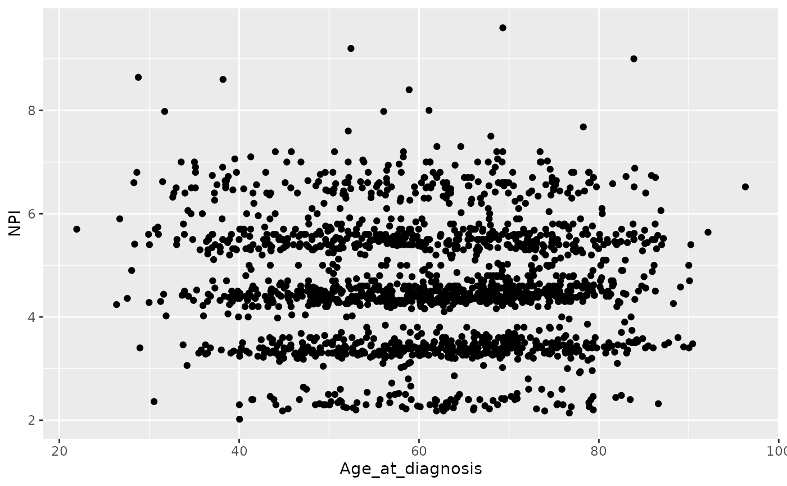
There is still some banding but nothing like the NPI values downloaded from cBioPortal which line up very closely to whole numbers.
The round() function is really useful
for rounding numerical values to a specified number of decimal places.
We’ll read in the METABRIC data again and create a small workflow that
carries out the tumour size conversion, computes the NPI, rounds the
tumour size and the resulting NPI value to 1 decimal place and displays
the results in decreasing order of NPI.
read_csv("https://zenodo.org/record/6450144/files/metabric_clinical_and_expression_data.csv") %>%
mutate(Tumour_size = Tumour_size / 10) %>%
mutate(NPI = 0.2 * Tumour_size + Lymph_node_status + Neoplasm_histologic_grade) %>%
mutate(Tumour_size = round(Tumour_size, digits = 1)) %>%
mutate(NPI = round(NPI, digits = 1)) %>%
arrange(desc(NPI)) %>%
select(Tumour_size, Lymph_node_status, Neoplasm_histologic_grade, NPI)## # A tibble: 1,904 × 4
## Tumour_size Lymph_node_status Neoplasm_histologic_grade NPI
## <dbl> <dbl> <dbl> <dbl>
## 1 18 3 3 9.6
## 2 16 3 3 9.2
## 3 15 3 3 9
## 4 13 3 3 8.6
## 5 18.2 2 3 8.6
## 6 12 3 3 8.4
## 7 10 3 3 8
## 8 9.9 3 3 8
## 9 9.9 3 3 8
## 10 8.4 3 3 7.7
## # … with 1,894 more rowsIn that last workflow we included the same rounding operation applied
to two different variables. It would be nice to be able to carry out
just the one mutate() but apply it to both
Tumour_size and NPI columns and we can using
across() inside mutate().
This allows us to apply a function across multiple columns.
metabric %>%
mutate(across(c(Tumour_size, NPI), round, digits = 1)) %>%
select(Patient_ID, Tumour_size, NPI)## # A tibble: 1,904 × 3
## Patient_ID Tumour_size NPI
## <chr> <dbl> <dbl>
## 1 MB-0000 2.2 6.4
## 2 MB-0002 1 4.2
## 3 MB-0005 1.5 4.3
## 4 MB-0006 2.5 4.5
## 5 MB-0008 4 6.8
## 6 MB-0010 3.1 4.6
## 7 MB-0014 1 4.2
## 8 MB-0022 2.9 4.6
## 9 MB-0028 1.6 5.3
## 10 MB-0035 2.8 3.6
## # … with 1,894 more rowsThis is slightly more complicated. Inside across() we
had to group the variables for which we want the function to apply using
c(). We then gave the function name as the next argument
and finally any additional arguments that the function needs, in this
case the number of digits.
We can use the range operator and the same helper functions as we did
for selecting columns using select() inside
across().
For example, we might decide that our expression values are given to a much higher degree of precision than is strictly necessary.
## # A tibble: 1,904 × 9
## Patient_ID ESR1 ERBB2 PGR TP53 PIK3CA GATA3 FOXA1 MLPH
## <chr> <dbl> <dbl> <dbl> <dbl> <dbl> <dbl> <dbl> <dbl>
## 1 MB-0000 8.93 9.33 5.68 6.34 5.7 6.93 7.95 9.73
## 2 MB-0002 10.0 9.73 7.51 6.19 5.76 11.2 11.8 12.5
## 3 MB-0005 10.0 9.73 7.38 6.4 6.75 9.29 11.7 10.3
## 4 MB-0006 10.4 10.3 6.82 6.87 7.22 8.67 11.9 10.5
## 5 MB-0008 11.3 9.96 7.33 6.34 5.82 9.72 11.6 12.2
## 6 MB-0010 11.2 9.74 5.95 5.42 6.12 9.79 12.1 11.4
## 7 MB-0014 10.8 9.28 7.72 5.99 7.48 8.37 11.5 10.8
## 8 MB-0022 10.4 8.61 5.59 6.17 7.59 7.87 10.7 9.95
## 9 MB-0028 12.5 10.7 5.33 6.22 6.25 10.3 12.2 10.9
## 10 MB-0035 7.54 11.5 5.59 6.41 5.99 10.2 12.8 13.5
## # … with 1,894 more rowsOr we could decide that all the columns whose names end with “_status” are in fact categorical variables and should be converted to factors.
metabric %>%
mutate(across(ends_with("_status"), as.factor)) %>%
select(Patient_ID, ends_with("_status"))## # A tibble: 1,904 × 7
## Patient_ID Survival_status Vital_status Lymph_node_stat… ER_status PR_status
## <chr> <fct> <fct> <fct> <fct> <fct>
## 1 MB-0000 LIVING Living 3 Positive Negative
## 2 MB-0002 LIVING Living 1 Positive Positive
## 3 MB-0005 DECEASED Died of Dise… 2 Positive Positive
## 4 MB-0006 LIVING Living 2 Positive Positive
## 5 MB-0008 DECEASED Died of Dise… 3 Positive Positive
## 6 MB-0010 DECEASED Died of Dise… 1 Positive Positive
## 7 MB-0014 LIVING Living 2 Positive Positive
## 8 MB-0022 DECEASED Died of Othe… 2 Positive Negative
## 9 MB-0028 DECEASED Died of Othe… 2 Positive Negative
## 10 MB-0035 DECEASED Died of Dise… 1 Positive Negative
## # … with 1,894 more rows, and 1 more variable: HER2_status <fct>The mutate function with across is really
very powerful but with that comes additional complexity.
For example, we may come across situations where we’d like to apply the same operation to multiple columns but where there is no available function in R to do what we want.
Let’s say we want to convert the petal and sepal measurements in the
iris data set from centimetres to millimetres. We’d either
need to create a new function to do this conversion or we could use what
is known as an anonymous function, also known as a lambda
expression.
There is no ‘multiply by 10’ function and it seems a bit pointless to
create one just for this conversion so we’ll use an anonymous function
instead – anonymous because it has no name, it’s an in situ
function only used in our mutate with across
function call.
## # A tibble: 150 × 5
## Sepal.Length Sepal.Width Petal.Length Petal.Width Species
## <dbl> <dbl> <dbl> <dbl> <fct>
## 1 51 35 14 2 setosa
## 2 49 30 14 2 setosa
## 3 47 32 13 2 setosa
## 4 46 31 15 2 setosa
## 5 50 36 14 2 setosa
## 6 54 39 17 4 setosa
## 7 46 34 14 3 setosa
## 8 50 34 15 2 setosa
## 9 44 29 14 2 setosa
## 10 49 31 15 1 setosa
## # … with 140 more rowsThe ~ denotes that we’re using an
anonymous function (it is the symbol for formulae in R) and the
. is a placeholder for the column being operated on. In
this case, we’re multiplying each of the columns between
Sepal.Length and Petal.Width inclusive by
10.
If you think this is getting fairly complicated you’d be right. We’ll
leave it there for now but point you to vignette(“colwise”) if you’re
interested in finding out more information on how column-wise operations
with across work.
summarise()
We’ll cover the fifth of the main dplyr ‘verb’ functions,
summarise(), only briefly here. This
function computes summary values for one or more variables (columns) in
a table. Here we will summarise values for the entire table but this
function is much more useful in combination with group_by()
in working on groups of observations within the data set. We will look
at summarizing groups of observations next week.
Any function that calculates a single scalar value from a vector can
be used with summarise(). For example, the
mean() function calculates the arithmetic mean of a numeric
vector. Let’s calculate the average ESR1 expression for tumour samples
in the METABRIC data set.
mean(metabric$ESR1)## [1] 9.607824The equivalent operation using summarise() is:
## # A tibble: 1 × 1
## `mean(ESR1)`
## <dbl>
## 1 9.61If you prefer Oxford spelling, in which -ize is preferred to -ise, you’re in luck as dplyr accommodates the alternative spelling.
Both of the above statements gave the same average expression value
but these were output in differing formats. The mean()
function collapses a vector to single scalar value, which as we know is
in fact a vector of length 1. The summarise() function, as
with most tidyverse functions, returns another data frame, albeit one in
which there is a single row and a single column.
Returning a data frame might be quite useful, particularly if we’re summarising multiple columns or using more than one function, for example computing the average and standard deviation.
## # A tibble: 1 × 2
## ESR1_mean ESR1_sd
## <dbl> <dbl>
## 1 9.61 2.13Notice how we also named the output columns in this last example.
summarise() collapses a data frame into a single row by
calculating summary values of one or more of the columns.
It can take any function that takes a vector of values and returns a single value. Some of the more useful functions include:
mean(),
median()
sd(),
mad()
min(),
max(),
quantile()
first(),
last()
n()
Note the first(), last() and n()
are only really useful when working on groups of observations using
group_by().
n() is a special function that returns the
number of observations; it doesn’t take a vector argument, i.e. a
column.
It is also possible to summarise using a function that takes more than one value, i.e. from multiple columns. For example, we could compute the correlation between the expression of FOXA1 and MLPH.
## # A tibble: 1 × 1
## correlation
## <dbl>
## 1 0.898Similar to mutate(), summarise() can be
used with across()for applying the same summarization
function to multiple columns in a single operation.
Inside across() we give the columns we want the function
to apply, followed by the function name. Selecting the columns is done
in the same way as for mutate() with across(),
whatever works for select() e.g.c(),
:, starts_with().
## # A tibble: 1 × 2
## FOXA1 MLPH
## <dbl> <dbl>
## 1 10.8 11.4## # A tibble: 1 × 8
## ESR1 ERBB2 PGR TP53 PIK3CA GATA3 FOXA1 MLPH
## <dbl> <dbl> <dbl> <dbl> <dbl> <dbl> <dbl> <dbl>
## 1 9.61 10.8 6.24 6.20 5.97 9.50 10.8 11.4You have to be careful with summarise() and
across() that all columns can be summarised with the given
summary function. For example, what happens if we try to compute an
average of a set of character values?
Note we can use everything() if we want to use across
with all columns.
summarise(metabric, across(everything(), mean, na.rm = TRUE))## Warning in mean.default(col, ...): argument is not numeric or logical: returning
## NA
## Warning in mean.default(col, ...): argument is not numeric or logical: returning
## NA
## Warning in mean.default(col, ...): argument is not numeric or logical: returning
## NA
## Warning in mean.default(col, ...): argument is not numeric or logical: returning
## NA
## Warning in mean.default(col, ...): argument is not numeric or logical: returning
## NA
## Warning in mean.default(col, ...): argument is not numeric or logical: returning
## NA
## Warning in mean.default(col, ...): argument is not numeric or logical: returning
## NA
## Warning in mean.default(col, ...): argument is not numeric or logical: returning
## NA
## Warning in mean.default(col, ...): argument is not numeric or logical: returning
## NA
## Warning in mean.default(col, ...): argument is not numeric or logical: returning
## NA
## Warning in mean.default(col, ...): argument is not numeric or logical: returning
## NA
## Warning in mean.default(col, ...): argument is not numeric or logical: returning
## NA
## Warning in mean.default(col, ...): argument is not numeric or logical: returning
## NA
## Warning in mean.default(col, ...): argument is not numeric or logical: returning
## NA## # A tibble: 1 × 34
## Patient_ID Cohort Age_at_diagnosis Survival_time Survival_status Vital_status
## <dbl> <dbl> <dbl> <dbl> <dbl> <dbl>
## 1 NA 2.64 61.1 125. NA NA
## # … with 28 more variables: Chemotherapy <dbl>, Radiotherapy <dbl>,
## # Tumour_size <dbl>, Tumour_stage <dbl>, Neoplasm_histologic_grade <dbl>,
## # Lymph_nodes_examined_positive <dbl>, Lymph_node_status <dbl>,
## # Cancer_type <dbl>, ER_status <dbl>, PR_status <dbl>, HER2_status <dbl>,
## # HER2_status_measured_by_SNP6 <dbl>, PAM50 <dbl>, `3-gene_classifier` <dbl>,
## # Nottingham_prognostic_index <dbl>, Cellularity <dbl>,
## # Integrative_cluster <dbl>, Mutation_count <dbl>, ESR1 <dbl>, ERBB2 <dbl>, …We get a lot of warning messages and NA values for those
columns for which computing an average does not make sense.
where() can be used to select those
values for which a summarization function is appropriate, for example,
where the column is of type numeric.
## # A tibble: 1 × 19
## Cohort Age_at_diagnosis Survival_time Tumour_size Tumour_stage
## <dbl> <dbl> <dbl> <dbl> <dbl>
## 1 2.64 61.1 125. 2.62 1.75
## # … with 14 more variables: Neoplasm_histologic_grade <dbl>,
## # Lymph_nodes_examined_positive <dbl>, Lymph_node_status <dbl>,
## # Nottingham_prognostic_index <dbl>, Mutation_count <dbl>, ESR1 <dbl>,
## # ERBB2 <dbl>, PGR <dbl>, TP53 <dbl>, PIK3CA <dbl>, GATA3 <dbl>, FOXA1 <dbl>,
## # MLPH <dbl>, NPI <dbl>It is possible to summarise using more than one function in which case a list of functions needs to be provided.
## # A tibble: 1 × 6
## ESR1_1 ESR1_2 ERBB2_1 ERBB2_2 PGR_1 PGR_2
## <dbl> <dbl> <dbl> <dbl> <dbl> <dbl>
## 1 9.61 2.13 10.8 1.36 6.24 1.02Pretty neat but I’m not sure about those column headings in the output – fortunately we have some control over these.
## # A tibble: 1 × 6
## ESR1_average ESR1_stdev ERBB2_average ERBB2_stdev PGR_average PGR_stdev
## <dbl> <dbl> <dbl> <dbl> <dbl> <dbl>
## 1 9.61 2.13 10.8 1.36 6.24 1.02The mutate and summarise functions with
across() work in a very similar manner, very much in line
with the coherent and consistent framework provided by
dplyr and the entire tidyverse. For example, we could use
an anonymous function with across() in a
summarise() operation to apply to multiple variables. In
the assignment from last week, we asked you to compute the correlation
of the expression for FOXA1 against all other genes to see which was
most strongly correlated. Here is how we could do this in a single
summarise() statement using an anonymous function.
## # A tibble: 1 × 7
## ESR1 ERBB2 PGR TP53 PIK3CA GATA3 MLPH
## <dbl> <dbl> <dbl> <dbl> <dbl> <dbl> <dbl>
## 1 0.724 0.280 0.390 -0.0700 -0.149 0.781 0.898Notice how we selected all genes between ESR1, the first gene column in our data frame, and MLPH, the last gene column, but then excluded FOXA1 as we’re not all that interested in the correlation of FOXA1 with itself (we know the answer is 1).
Finally, let’s change tack completely and take a look at a very useful feature of ggplot2 – faceting.
Faceting allows you to split your plot into subplots, or facets, based on one or more categorical variables. Each of the subplots displays a subset of the data.
There are two faceting functions,
facet_wrap() and
facet_grid().
Let’s create a scatter plot of GATA3 and ESR1 expression values where we’re displaying the PR positive and PR negative patients using different colours. This is a very similar to a plot we created last session
ggplot(data = metabric, mapping = aes(x = GATA3, y = ESR1, colour = PR_status)) +
geom_point(size = 0.5, alpha = 0.5)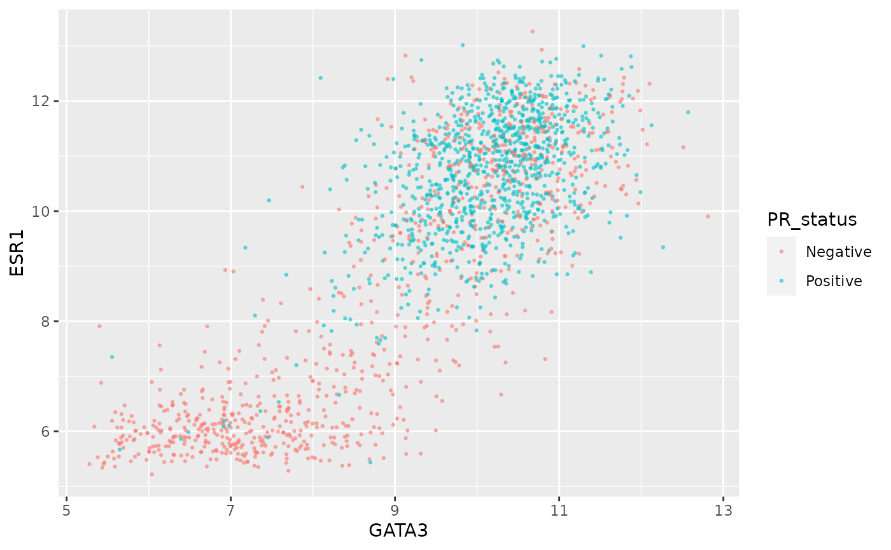
An alternative is to use faceting with
facet_wrap().
ggplot(data = metabric, mapping = aes(x = GATA3, y = ESR1)) +
geom_point(size = 0.5, alpha = 0.5) +
facet_wrap(vars(PR_status))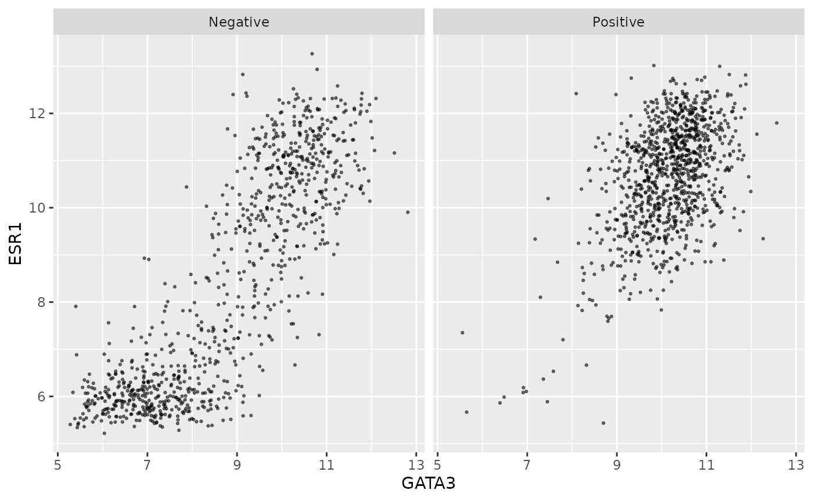
This produces two plots, side-by-side, one for each of the categories
in the PR_status variable, with a banner across the top of
each for the category.
The variable(s) used for faceting can be specified using
vars().
We can still use separate colours if we prefer things to be, well, colourful.
ggplot(data = metabric, mapping = aes(x = GATA3, y = ESR1, colour = PR_status)) +
geom_point(size = 0.5, alpha = 0.5) +
facet_wrap(vars(PR_status))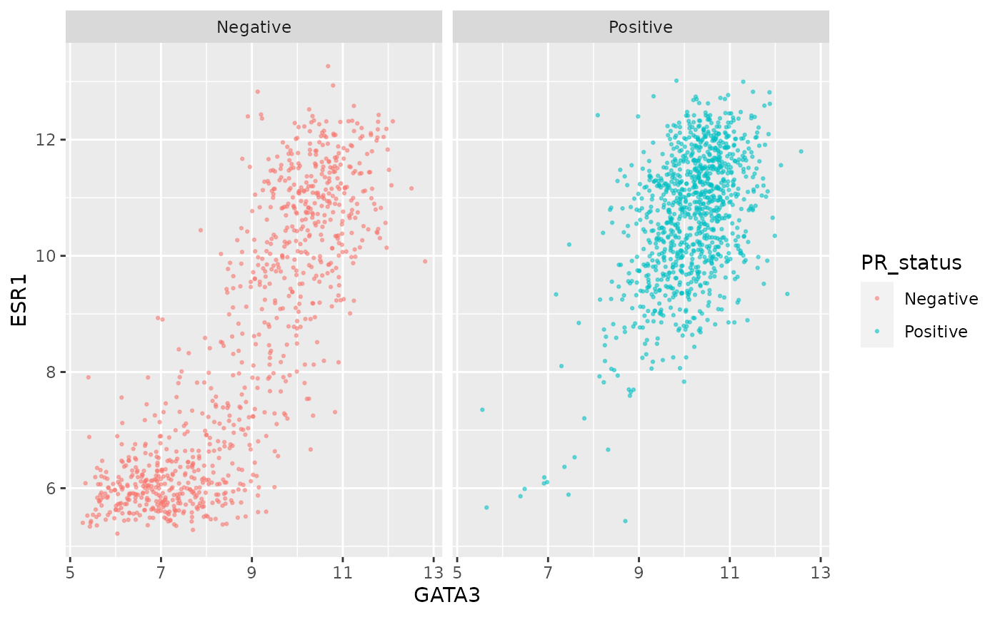
Faceting is usually better than displaying groups using different colours when there are more than two or three groups when it can be difficult to really tell which points belong to each group. A case in point is for the 3-gene classification in the GATA3 vs ESR1 scatter plot we created last week. Let’s create a faceted version of that plot.
ggplot(data = metabric, mapping = aes(x = GATA3, y = ESR1, colour = `3-gene_classifier`)) +
geom_point(size = 0.5, alpha = 0.5) +
facet_wrap(vars(`3-gene_classifier`))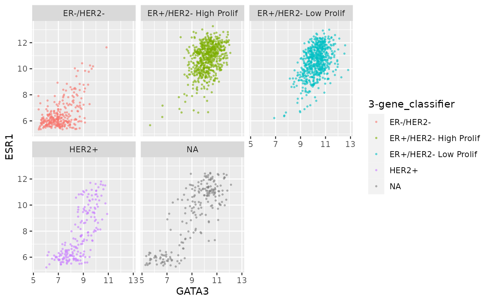
This helps explain why the function is called
facet_wrap(). When it has too many subplots to fit across
the page, it wraps around to another row. We can control how many rows
or columns to use with the nrow and ncol
arguments.
ggplot(data = metabric, mapping = aes(x = GATA3, y = ESR1, colour = `3-gene_classifier`)) +
geom_point(size = 0.5, alpha = 0.5) +
facet_wrap(vars(`3-gene_classifier`), nrow = 1)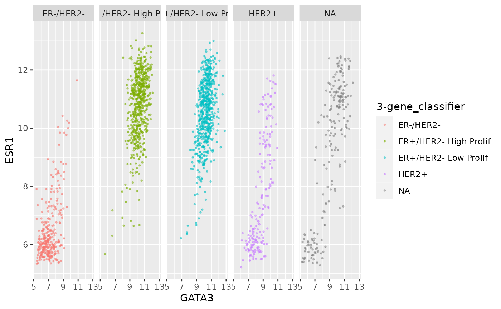
ggplot(data = metabric, mapping = aes(x = GATA3, y = ESR1, colour = `3-gene_classifier`)) +
geom_point(size = 0.5, alpha = 0.5) +
facet_wrap(vars(`3-gene_classifier`), ncol = 2)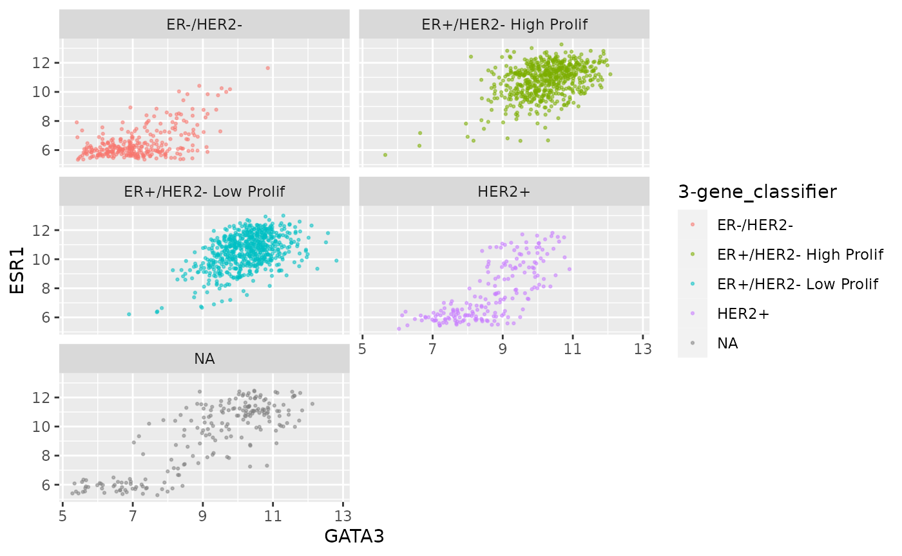
We can combine faceting on one variable with a colour aesthetic for another variable. For example, let’s show the tumour stage status using faceting and the HER2 status using colours.
ggplot(data = metabric, mapping = aes(x = GATA3, y = ESR1, colour = HER2_status)) +
geom_point(size = 0.5, alpha = 0.5) +
facet_wrap(vars(Neoplasm_histologic_grade))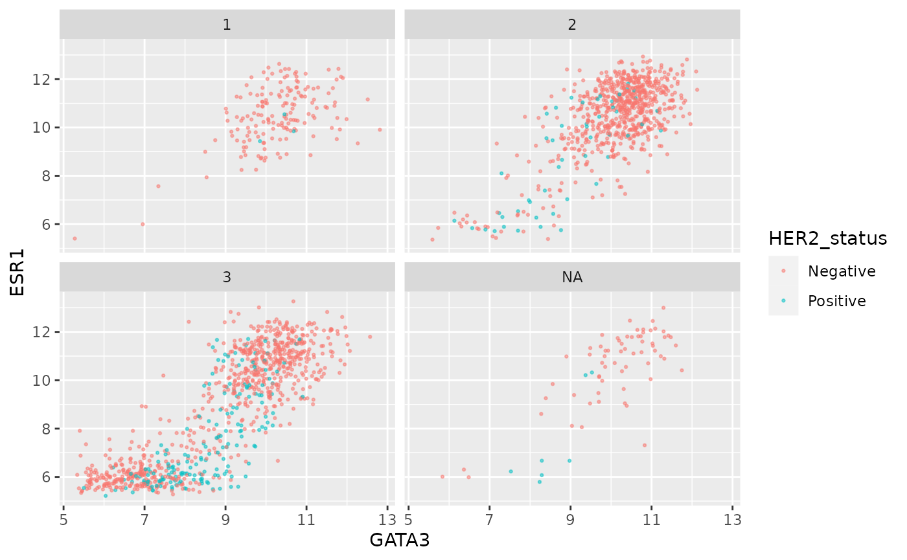
Instead of this we could facet on more than variable.
ggplot(data = metabric, mapping = aes(x = GATA3, y = ESR1)) +
geom_point(size = 0.5, alpha = 0.5) +
facet_wrap(vars(Neoplasm_histologic_grade, HER2_status))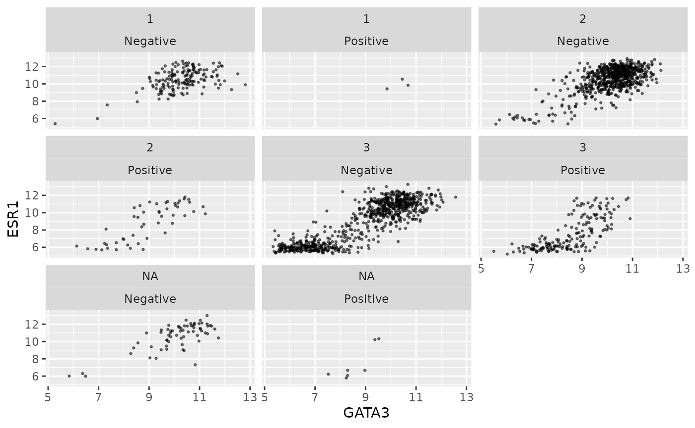
Faceting on two variables is usually better done using the other
faceting function, facet_grid(). Note the
change in how the formula is written.
ggplot(data = metabric, mapping = aes(x = GATA3, y = ESR1)) +
geom_point(size = 0.5, alpha = 0.5) +
facet_grid(vars(Neoplasm_histologic_grade), vars(HER2_status))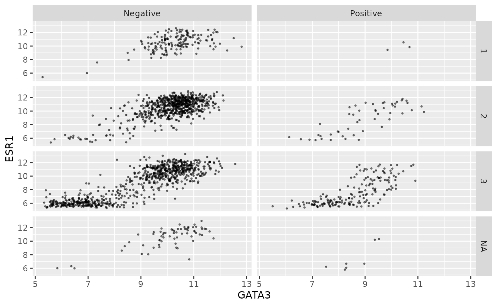
Again we can use colour aesthetics alongside faceting to add further information to our visualization.
ggplot(data = metabric, mapping = aes(x = GATA3, y = ESR1, colour = PAM50)) +
geom_point(size = 0.5, alpha = 0.5) +
facet_grid(vars(Neoplasm_histologic_grade), vars(HER2_status))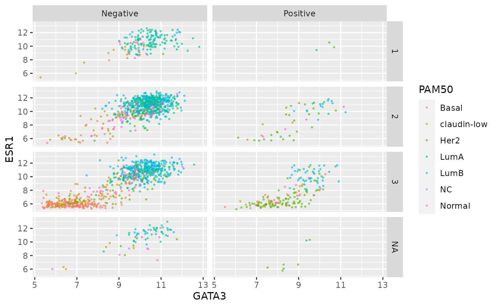
Finally, we can use a labeller to change the labels for
each of the categorical values so that these are more meaningful in the
context of this plot.
grade_labels <- c("1" = "Grade I", "2" = "Grade II", "3" = "Grade III")
her2_status_labels <- c("Positive" = "HER2 positive", "Negative" = "HER2 negative")
#
ggplot(data = metabric, mapping = aes(x = GATA3, y = ESR1, colour = PAM50)) +
geom_point(size = 0.5, alpha = 0.5) +
facet_grid(vars(Neoplasm_histologic_grade),
vars(HER2_status),
labeller = labeller(
Neoplasm_histologic_grade = grade_labels,
HER2_status = her2_status_labels
)
)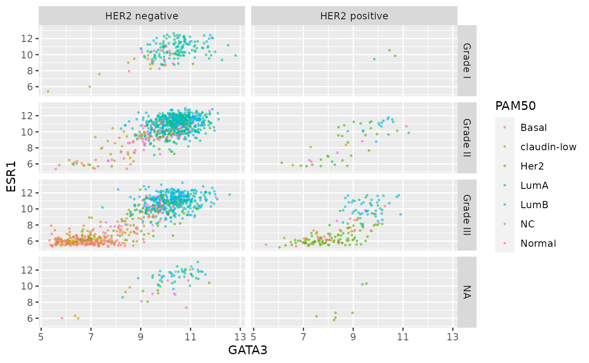
This would certainly be necessary if we were to use ER and HER2 status on one side of the grid.
er_status_labels <- c("Positive" = "ER positive", "Negative" = "ER negative")
#
ggplot(data = metabric, mapping = aes(x = GATA3, y = ESR1, colour = PAM50)) +
geom_point(size = 0.5, alpha = 0.5) +
facet_grid(vars(Neoplasm_histologic_grade),
vars(ER_status, HER2_status),
labeller = labeller(
Neoplasm_histologic_grade = grade_labels,
ER_status = er_status_labels,
HER2_status = her2_status_labels
)
)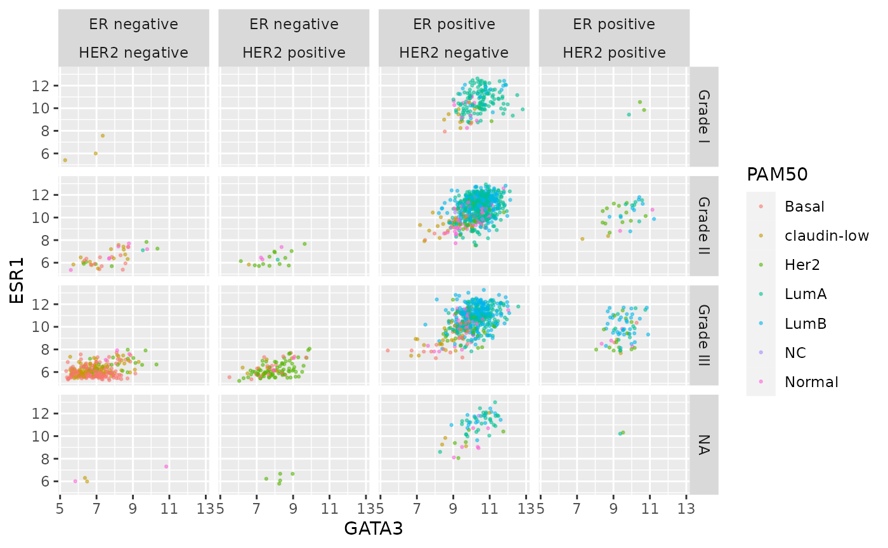
In this session we have reviewed the following concepts: